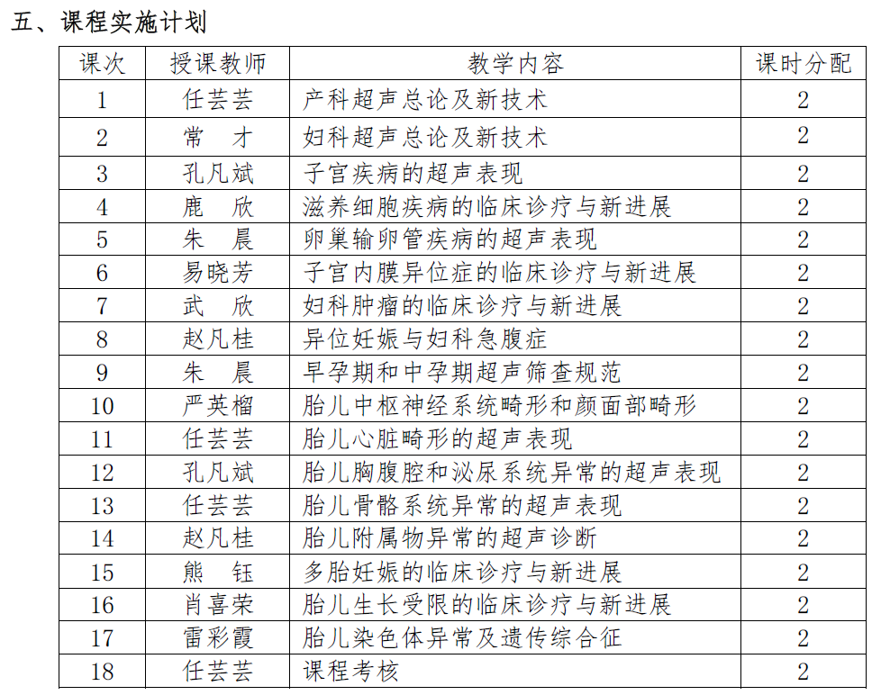

2025秋 · MED60079.03 · 任芸芸、孔凡斌、鹿欣、朱晨、易晓芳、武欣、赵凡桂、严英榴、熊钰、肖喜荣、雷彩霞
来源：复旦教务系统教学大纲，本轮使用已授权账号下载。原始正文与考核信息；去除联系方式和网页脚本，内嵌图片按原字节去重保存。
妇产科超声诊断学主要针对 妇产科专业研究生 和医学影像专业研究生 （总36学时， 2学分）。妇产科超声诊断学 是妇产科和超声医学这两种学科的整合，是妇产科学在临床超声诊断领域的应用，也是妇产科疾病诊断最常用、最重要的学科之一。 本 课程 内容涉及女性内生殖器的解剖和生理、 妇科内分泌、妇科肿瘤、正常妊娠、病理妊娠、胎儿医学、胚胎学、超声解剖学、超声诊断学 以及生物工程 、遗传诊断等多个和技术。由于超声检查便捷、无创、无电离辐射的特点，我国 对于妇产科超声检查 的临床需求不断增长，相关技术的硬件设施日趋完善，但现阶段接受过系统全面 妇产科超声专业教育培训 的医生仍不足。通过开设 妇产科超声诊断 学这门 课程 ，可以培养适应社会主义现代化、建设健康中国所需要的“基础扎实、能力强、素质高”将来能从事 妇产科超声诊断 工作的高级实用型医学人才，能够将理论知识与 临床应用 技术密切结合，利用 妇产科超声 知识和技 术，解决 早期、准确发现妇科疾病，以及产前诊断胎儿畸形 等相关问题，提高出生人
口质量。
无
深入浅出、简明扼要的讲述妇产科超声的发展历史及妇产科超声相关研究及
操作技术，注意结合临床实例，使学生掌握妇产科超声诊断学相关的基本理论、
基本知识和基本技能，掌握超声图像方位的识别，经阴道超声的图像采集要点，
妇科常见病多发病的主要声像图特征，以及产科胎儿生长测量基本切面的操作要
点，深入介绍妇科生殖道畸形、妇科肿瘤、胎儿 先天性异常 以及胎盘、脐带、羊
水等附属物异常的相关前沿进展和产前诊断等。
重点掌握：
妇 产 科超声检查的探头类型、 检查项目、 适用范围 。 妇科常见病
多发病的 典型 声像图特征 、 产科早孕期和中孕期畸形筛查的适用孕周和检查流程。
熟悉
妇科急腹症 的典型 声像图特征 产科胎儿生长测量基本切面 以及国家
卫生部要求必须检查的六大胎儿结构畸形。
了解：
妇科肿瘤的声像图表现，产科 早孕期和中孕期畸形筛查的标准切面。
上课

《妇产科超声诊断学》，主编任芸芸，人民卫生出版社， 2019年 4月
《中国产科超声检查指南》，编写组长任芸芸，人民卫生出版社， 2019年 4月
| 项目 | 比例 | 评定说明 |
|---|---|---|
| 出勤Attendance | 20.0% | |
| 课堂表现Participation | 30.0% | |
| 课题论文Research Paper | 50.0% |